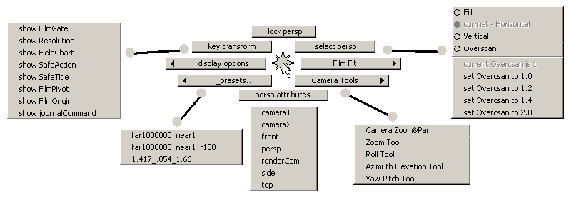

|
|
|
Camera Tools.
Camera Zoom&Pan:
You can zoom and pan view without modifying camera transform ! Very useful, when you want to enlarge part of the view with imagePlane or do not want to modify camera animation.
It is a scripted tool witch reacts on:
LMB drag - non-perspective zooming (change camera overscan).
MMB drag - pan camera without changing translations (offset camera film).
Shift + LMB - reset zoom (set overscan to 1.0).
Ctrl + LMB click on some viewport - retune tool to other view and other camera.
Cameras marking menu allows fast camera attributes editing for the active viewport. And contains a list of all scene cameras for fast changing.
You can find it in "_CGRU_camv_" hotkey category in maya Hotkeys Editor window. Default hotkey is "Ctrl + c";

persp - is the active viewport camera in this example.
"lock camName" - lock translate and rotate camera transform attributes.
"select camName" - select the current camera.
"camName attributes" - open an attribute editor for this camera.
"key transform" - set keys on translate and rotate attributes of camera transform.
"Film Fit ->", "display options ->"and "_presets.. ->" menuitems for rapid editing listed attributes.
"Zoom Tool", "Roll Tool", "Azimuth Elevation Tool" and "Yaw-Pitch Tool" are the standart camera tools.
| SourceForge.net Project | Раздел на форуме CGTALK.RU |